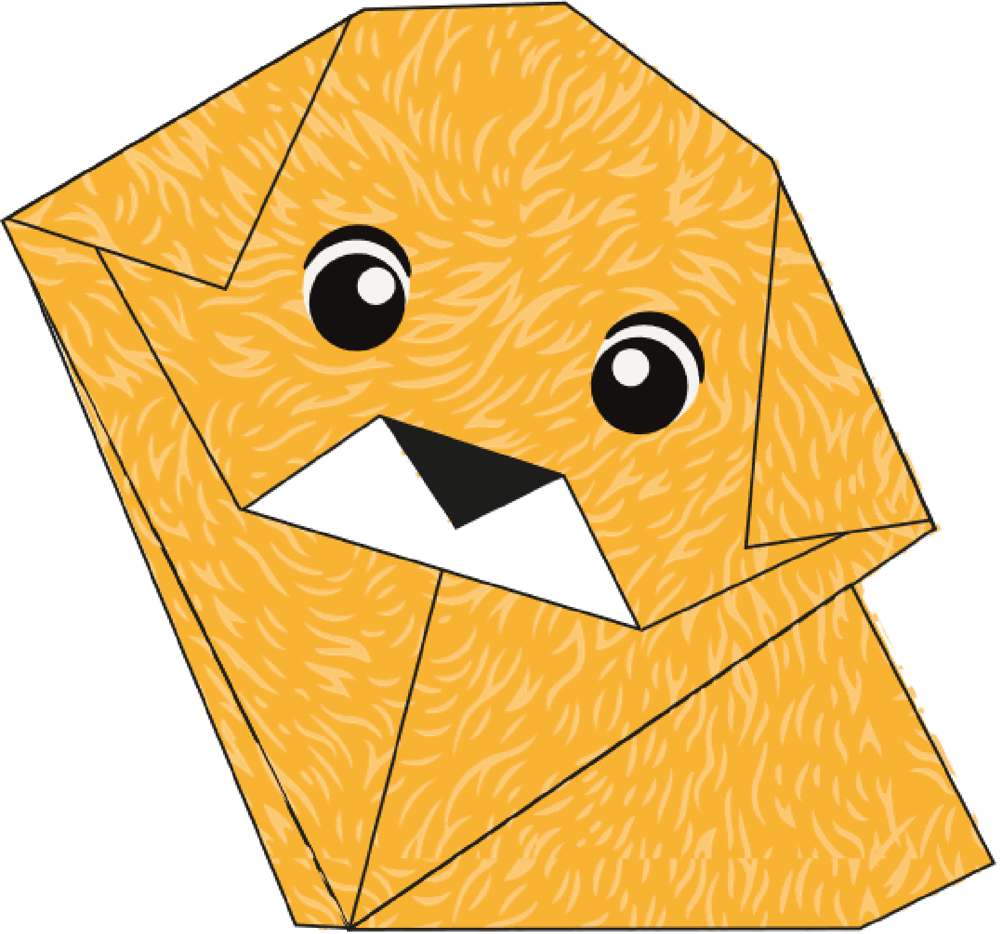
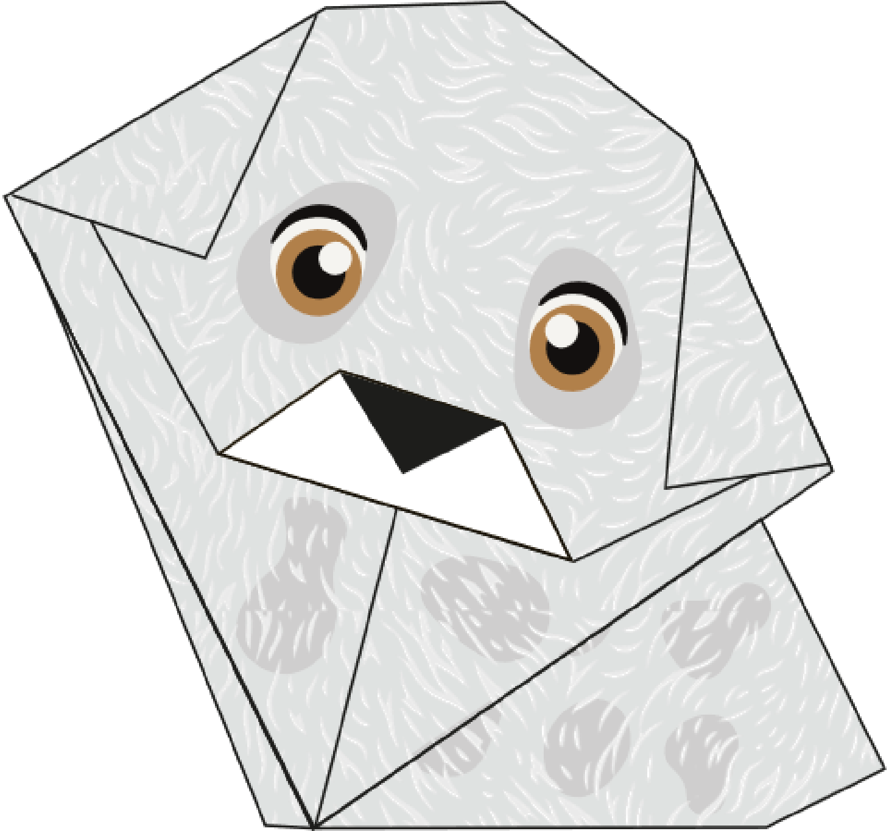
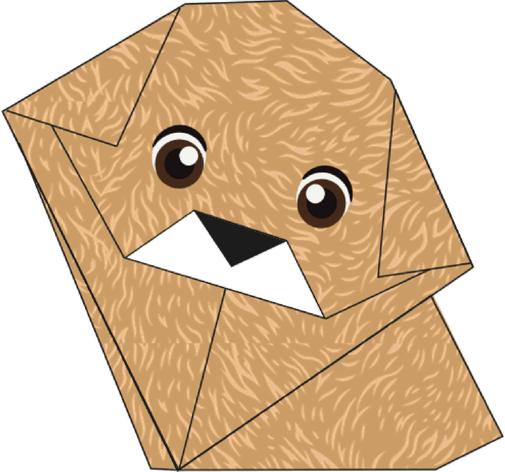

Adopta con Amor: Pasos para encontrar a tu Compañero Peludo
La adopción de una mascota es un acto lleno de amor y responsabilidad. En nuestra plataforma, te guiaremos a través de un proceso sencillo y significativo para encontrar a tu nuevo compañero peludo. Sigue estos tres pasos clave para iniciar este viaje de por vida.
Contacto y Visita al Refugio
Escoge a tu Nuevo Compañero
Llenado del Certificado de Adopción
Adopta y Crea
Te invitamos a explorar una experiencia única que combina el amor por los animales con la creatividad del origami. Aquí, no solo encontrarás información sobre cómo adoptar a un compañero peludo en nuestro refugio, sino también la oportunidad de crear tu propia figura de origami inspirada en nuestros perritos Ágatha, Bobby y Rocky. El arte del origami no solo te permite plasmar tu apoyo a la adopción responsable, sino que también te brinda una forma de expresión artística que conecta tu compromiso con el bienestar animal y tu pasión por la creación.
Bobby

Ágatha

Rocky
¿Listo para adquirir tu propio compañero de papel? ¡Dirígete al refugio y encuentra la ubicación en nuestra sección correspondiente!

Bienestar Animal Riobamba

(03) 294-3266

guambove@gadmriobamba.gob.ec